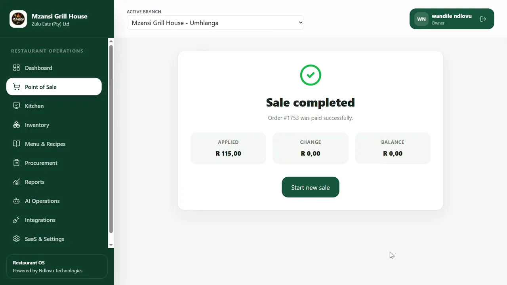
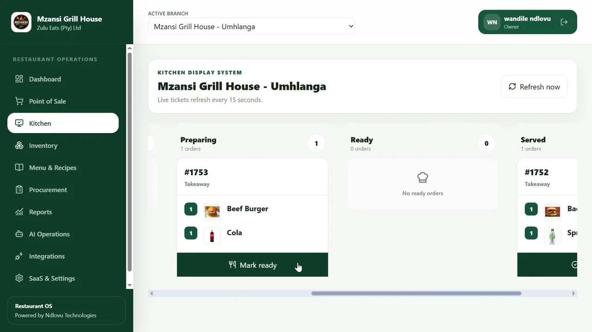
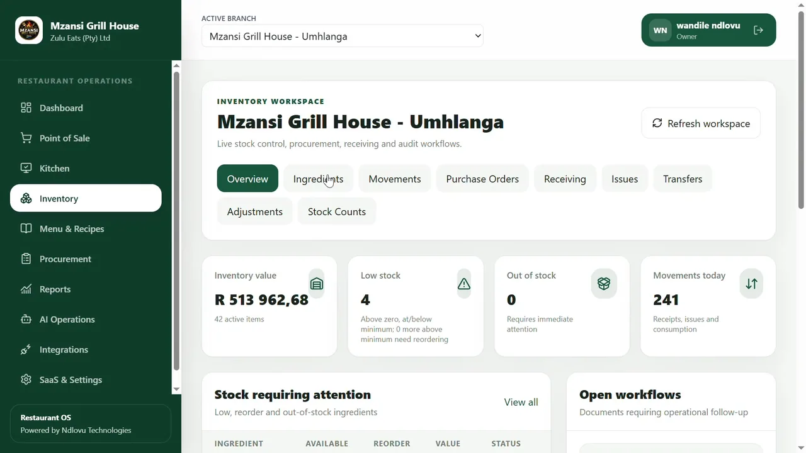
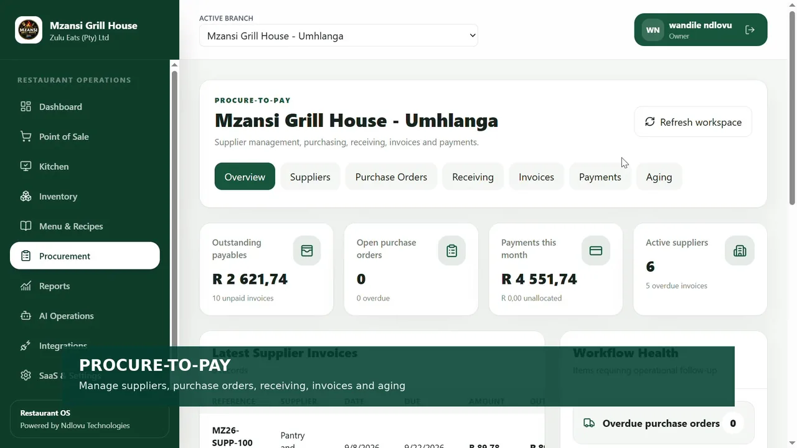
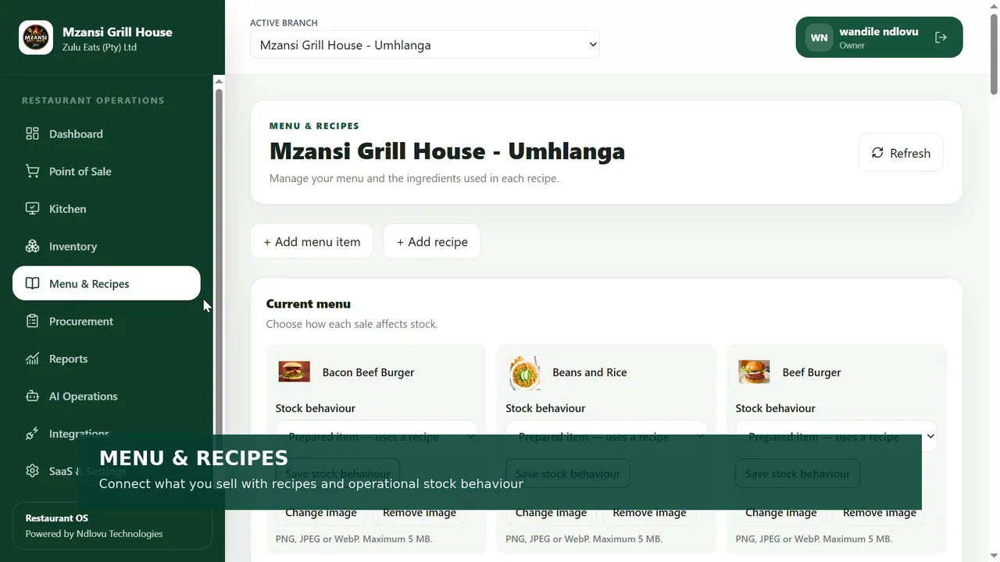
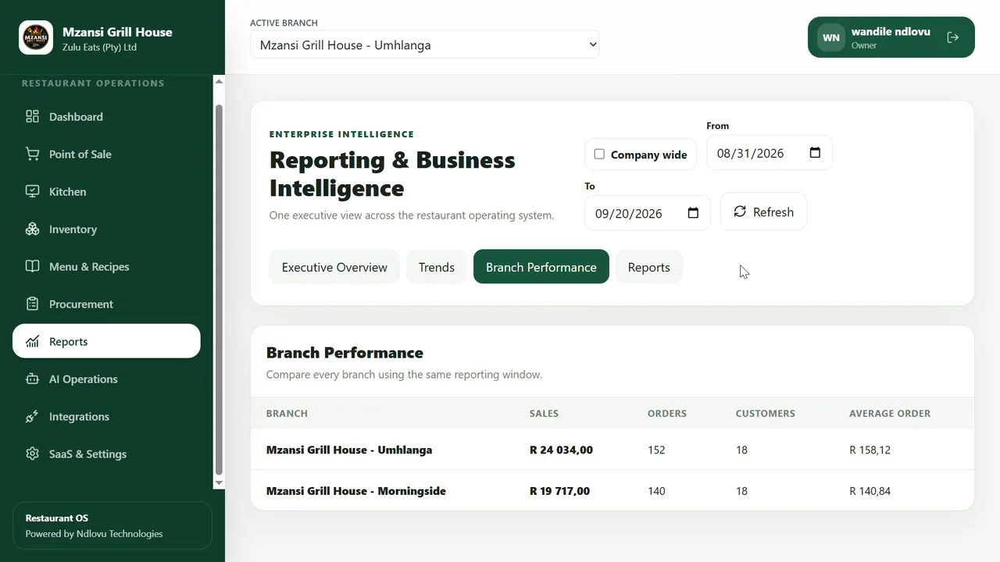

Sales
Capture and complete a sale
Menu selection, cart and checkout screens support the front-of-house transaction flow.
I developed a full-stack application to bring restaurant sales, kitchen operations, inventory, purchasing and reporting into a connected system. The interesting challenge was not making the screens work independently—it was designing workflows where different business actions affect the same records.
A sale triggers work beyond checkout: the kitchen needs the order, stock must be accounted for, purchases need receiving records, and managers need a reliable picture of performance. When these activities are managed separately, it becomes harder to trace what happened across the business.
The challenge is keeping related workflows and records consistent, rather than presenting each activity on an isolated screen.
I recorded the application running through sales, kitchen, stock, purchasing and reporting workflows using sample restaurant data.






I used a React and TypeScript interface that communicates with FastAPI endpoints. The backend contains request schemas, authorization checks, domain logic and SQLAlchemy persistence. PostgreSQL is the configured production database, with Alembic used for schema changes.
FastAPI handles requests while SQLAlchemy manages relational records and transactions. The stock-transfer workflow applies its consistency checks on the server, not just in the UI.
React and TypeScript provide the cashier, kitchen and management interfaces. These screens call backend APIs rather than modifying database records directly.
Pytest, Vitest, GitHub Actions and Docker Compose are part of the development and delivery tooling. The CI pipeline runs backend tests and frontend lint/build checks.
Technology stack: Python · FastAPI · SQLAlchemy · PostgreSQL · Alembic · React · TypeScript · Vite · Pytest · Vitest · GitHub Actions · Docker Compose
An inter-branch transfer has two stock-changing events: dispatch and receipt. I modelled these separately so a repeated request cannot silently deduct or add stock again.
Dispatch is allowed only for approved transfers. Receipt requires a dispatched transfer. Both operations reject attempts to process the same step again.
The handlers load records within the user's company boundary, lock affected rows, validate quantities and commit the corresponding stock movements and workflow state together.
The stock-transfer test covers the full transition sequence and several failure cases:
Automated test: backend/tests/launch/test_stock_transfer_lifecycle.py. These are automated test scenarios, not live customer results. The repository’s GitHub Actions pipeline last reported a successful run on 26 September 2026.
Relevant source: backend/app/routers/stock_transfer.py, backend/app/models/stock_transfer_item.py, backend/app/core/authorization.py.
Building Restaurant OS gave me experience with connected workflows, transaction boundaries and role-aware interfaces. It also showed me where I would simplify the implementation and strengthen testing before supporting larger workloads.
The stock-transfer router is over 2,300 lines long. I would move the transition and persistence rules into focused service modules and leave the router responsible for HTTP concerns.
Some existing tests run against in-memory SQLite. I would add PostgreSQL integration tests with concurrent requests, and include the frontend Vitest suite in CI.
The frontend stores its bearer token in localStorage. I would compare that approach with an HttpOnly cookie-based session design using an explicit threat model and suitable CSRF defences.